Le potassium 40, une source idéale
Pour se passer de sources radioactives trop actives et interdites en classe, toutes les expériences utilisent le potassium 40, présent à l’état de traces dans le potassium naturel (environ un dix-millième). Un simple sel du laboratoire de chimie suffit : thiocyanate de potassium KSCN en poudre, ou chlorure de potassium KCl.
Le potassium 40 est responsable de plus de la moitié de la radioactivité du corps humain : environ quatre à cinq mille désintégrations par seconde pour une personne de 80 kg. Avec l’uranium et le thorium, il contribue à la radioactivité naturelle des roches et à la chaleur de la Terre.
Il a la particularité de se désintégrer de deux façons : dans 89 % des cas en calcium 40 par désintégration β⁻, dans 11 % des cas en argon 40 par capture électronique suivie de l’émission d’un γ de 1,46 MeV. Le détecteur permet de retrouver ces proportions.
Les différents rayonnements et ce qui les arrête
Un noyau radioactif peut émettre trois grands types de rayonnement, qui ne traversent pas la matière de la même façon. C’est ce pouvoir de pénétration qui permet de les distinguer avec un simple compteur Geiger et quelques écrans.
| Rayonnement | Nature | Arrêté par |
|---|---|---|
| α | noyau d’hélium | une feuille de papier, quelques cm d’air |
| β | électron (β⁻) ou positon (β⁺) | quelques mm d’aluminium ou de verre |
| γ | photon de grande énergie | jamais totalement : atténué par le béton ou le plomb |
Le potassium 40 n’émet pas d’α : il émet des β (89 % des désintégrations) et des γ de 1,46 MeV (11 %).

Le dispositif
Un ordinateur, un Arduino Uno avec le shield Gravity, un module Geiger (environ 70 €), le logiciel Microcosmos, du KSCN en poudre, un système de levage (potence, support élévateur, briques LEGO®…), des écrans (papier, aluminium, plomb) et une calculatrice graphique. Voir le schéma du montage à un tube.
Durée des mesures. Après de nombreux essais, des mesures de 10 s pendant 5 minutes (série de 30 mesures) conviennent bien à toutes les expériences. Pour étudier la distribution plus finement, on peut lancer une mesure d’une heure, ou d’une nuit.
Les expériences
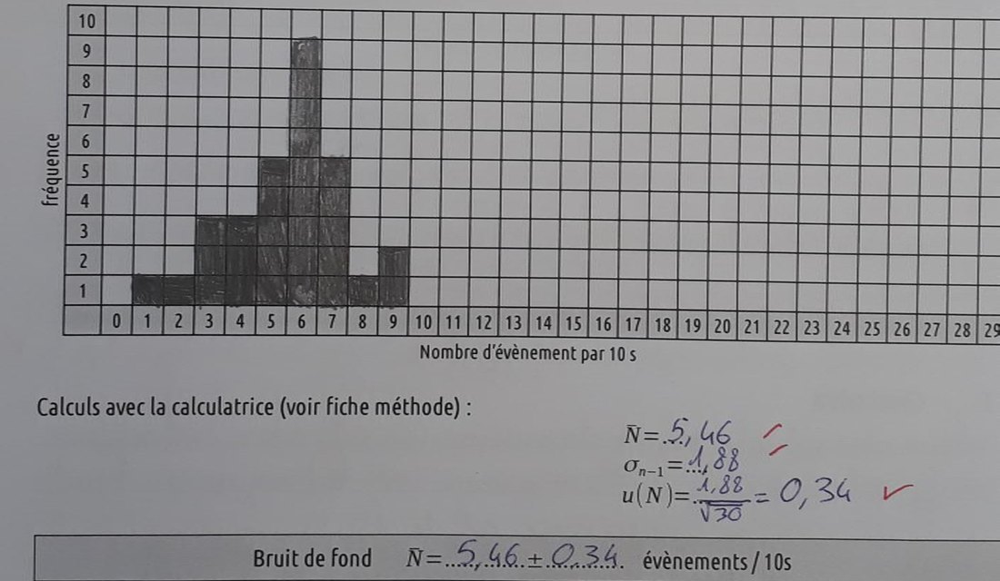
Le bruit de fond et les incertitudes
Première activité : mesurer le bruit de fond sans source. On note N le nombre d’impulsions comptées pendant dix secondes. Les élèves relèvent une série de mesures, tracent l’histogramme et calculent la moyenne et l’écart-type à la calculatrice. Cette mesure servira de référence pour la suite.
C’est l’occasion d’introduire l’incertitude de type A : pour N mesures x1, x2… xN d’écart-type σn−1, le résultat s’écrit
Deux séries ne donnent jamais les mêmes valeurs : le caractère aléatoire des désintégrations se voit directement. Sur une mesure longue (une nuit), l’histogramme se modélise par une gaussienne, une activité possible avec les mathématiques.
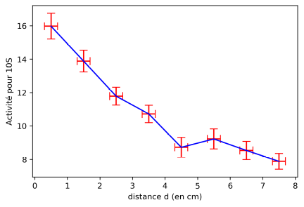
L’effet de la distance
La boîte de KSCN est posée sous le tube ; on ajoute une brique LEGO® à chaque mesure pour l’éloigner de 1 cm en 1 cm. Le montage est simple, stable et le réglage de la distance est très reproductible.
L’activité décroît rapidement : c’est le premier principe de la radioprotection, s’éloigner des sources. La loi en 1/d² ne se vérifie pas simplement : la source est étendue et l’air absorbe une partie du rayonnement.
Pour une série de 300 s avec le KSCN contre le tube : N = 16,3 ± 0,8 par 10 s, soit 11,1 ± 0,8 une fois le bruit de fond retiré.
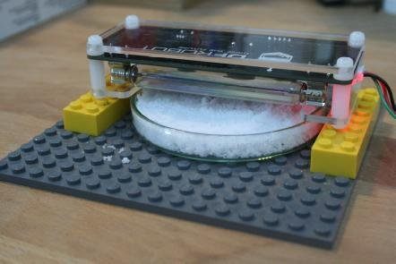
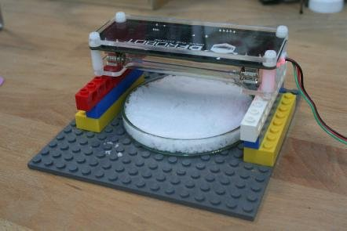
Les différents écrans
Sans changer la distance, on glisse un écran dans une encoche prévue entre la source et le tube, puis on mesure pendant 300 s.
- le papier ne change rien : pas d’α, comme attendu ;
- l’aluminium fait baisser le comptage : il absorbe des β (l’aluminium alimentaire est très fin, il en faut plusieurs plis) ;
- le plomb ramène presque au niveau du bruit de fond : le rayonnement mesuré est surtout du β… mais pas uniquement.
Séparer les β et les γ : retrouver 89 % / 11 %
Le potassium 40 se désintègre dans 89,28 % des cas en calcium 40 (β⁻) et dans 10,72 % des cas en argon 40, par capture électronique suivie d’un γ de 1,46 MeV. Peut-on retrouver ces proportions avec le détecteur ?
L’idée : un écran de plomb arrête la totalité des β mais laisse passer la plupart des γ. Pour des γ de 1 MeV, il faut près d’un centimètre de plomb pour les atténuer de moitié. D’après les tables d’atténuation du NIST, un écran de 1,3 mm de plomb n’absorbe que 7 % des γ de 1,5 MeV : 93 % le traversent.
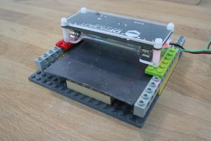
Trois mesures de trois heures
Avec des séries de 5 minutes, les incertitudes sont trop grandes pour conclure. On mesure donc pendant trois heures chacune des trois situations :
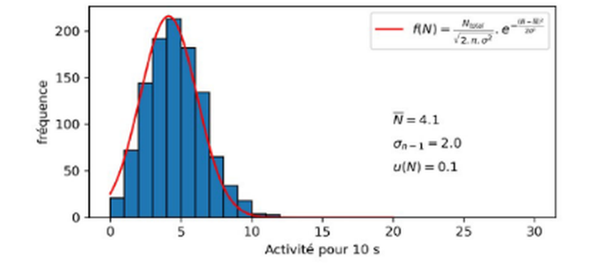
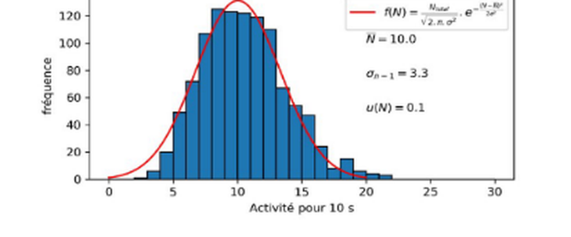
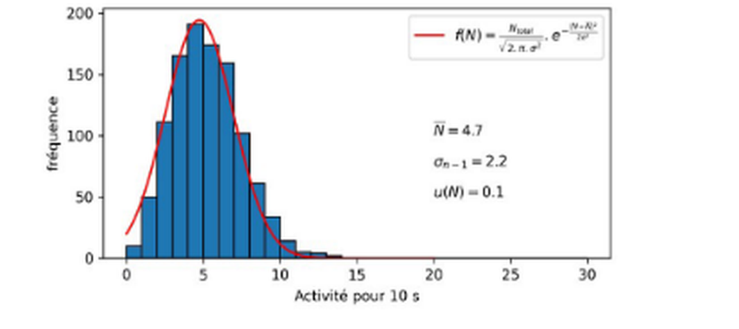
Activité pour 10 s ; chaque histogramme est ajusté par une gaussienne.
Le calcul
| Situation | Le tube compte | N / 10 s |
|---|---|---|
| sans source | bruit | 4,1 ± 0,1 |
| KSCN sans écran | β + γ + bruit | 10,0 ± 0,1 |
| KSCN + plomb 1,3 mm | 0,93 γ + bruit | 4,7 ± 0,1 |
le plomb ne laisse passer que 93 % des γ, d’où la division par 0,93
théorie : 89,28 % et 10,72 %
Conclusion. Avec un compteur Geiger, une boîte de sel de potassium et une plaque de plomb de toiture, on retrouve les proportions des deux voies de désintégration du potassium 40 : 89 % de β et 11 % de γ, pour 89,28 % et 10,72 % en théorie.
La demi-vie du radon : un aspirateur et un filtre à café
Le potassium 40 vit 1,25 milliard d’années : impossible de voir son activité diminuer en classe. Pour observer une décroissance radioactive, il faut une source à courte demi-vie… que l’on trouve gratuitement dans l’air de la salle : les descendants du radon.
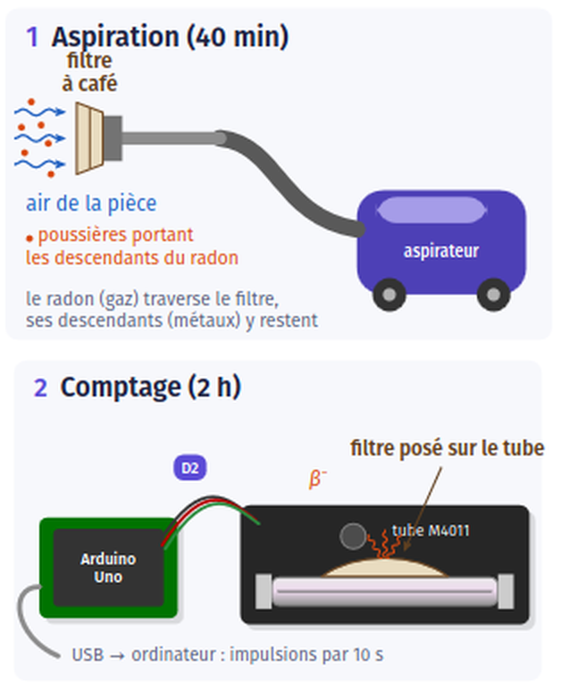
L’expérience
Un filtre à café est fixé sur le tube d’un aspirateur, qui fonctionne pendant 40 minutes dans une pièce peu aérée (ici une chambre mansardée). Le filtre est ensuite posé contre le tube Geiger, qui compte les impulsions par tranches de 10 s pendant environ 2 heures. Le bruit de fond, mesuré sans filtre, vaut 4,2 impulsions en 10 s.
D’où vient le radon ?
L’uranium 238, présent dans les roches (surtout le granite) et les matériaux de construction, donne naissance au radium 226 puis au radon 222. Le radon est un gaz noble : il s’échappe des murs et du sol et s’accumule dans l’air des pièces peu aérées. Ses descendants (polonium, plomb, bismuth) sont des métaux qui se fixent sur les poussières de l’air. Le filtre retient ces poussières : on ne recueille pas le radon, qui traverse le filtre, mais ses « enfants ».
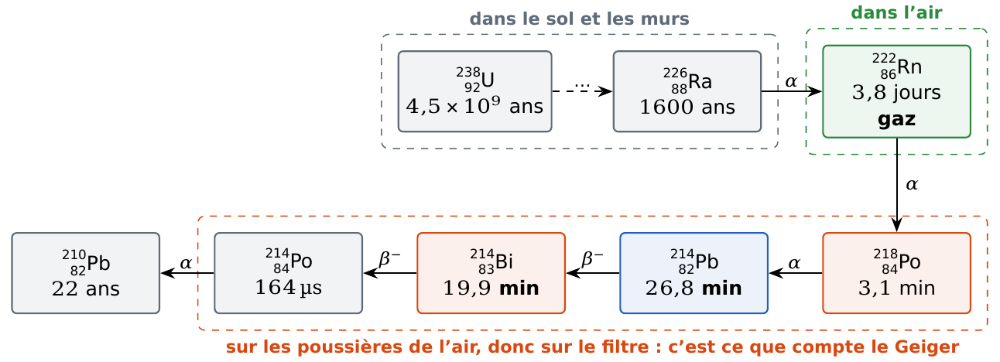

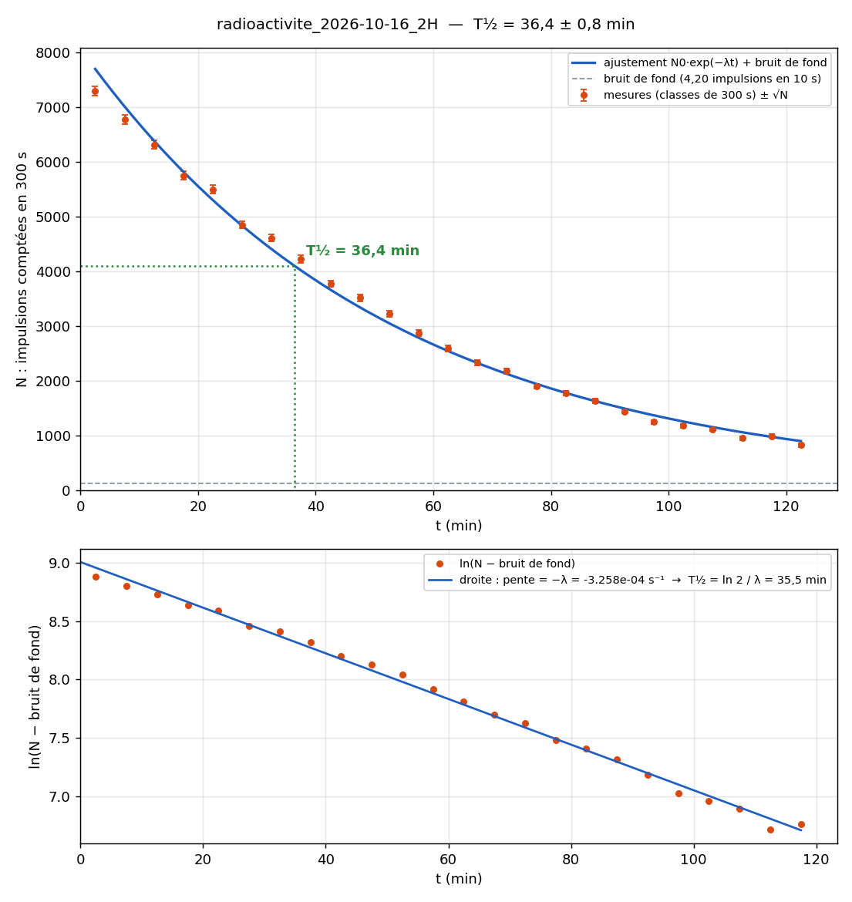
Les résultats
1 000 mesures de 10 s sont regroupées en classes de 300 s pour limiter les fluctuations. L’ajustement par une exponentielle N₀ e−λt + bruit de fond donne :
T1/2 = 36,4 ± 0,8 min
C’est plus que la demi-vie du plomb 214 (26,8 min) attendue. En regardant de près, la courbe n’est pas une simple exponentielle : les points sont sous l’ajustement au début et à la fin, au-dessus au milieu. La pente de ln(N − Nfond) augmente au cours du temps : elle correspond à une demi-vie d’environ 41 min entre 0 et 30 min, puis 35 min entre 60 et 120 min.
La décroissance est freinée au début, puis accélère : on mesure une demi-vie apparente.
L’explication : la filiation radioactive
Le filtre contient à la fois du plomb 214 et du bismuth 214. Or le bismuth 214 n’est pas seulement détruit par ses propres désintégrations : il est aussi fabriqué en permanence par la désintégration du plomb 214.
C’est l’image de deux bassins en cascade : le premier (plomb 214) se vide dans le second (bismuth 214), qui se vide lui-même. Au début, le second est rempli presque aussi vite qu’il se vide : le comptage baisse lentement. Au bout de quelques heures, le bismuth ne fait plus que suivre le plomb : c’est l’équilibre de filiation, et la demi-vie apparente tend vers 26,8 min.
Le modèle prévoit environ 50 min au début, puis 31 min entre 1 h et 2 h : c’est le comportement mesuré (41 min puis 35 min).
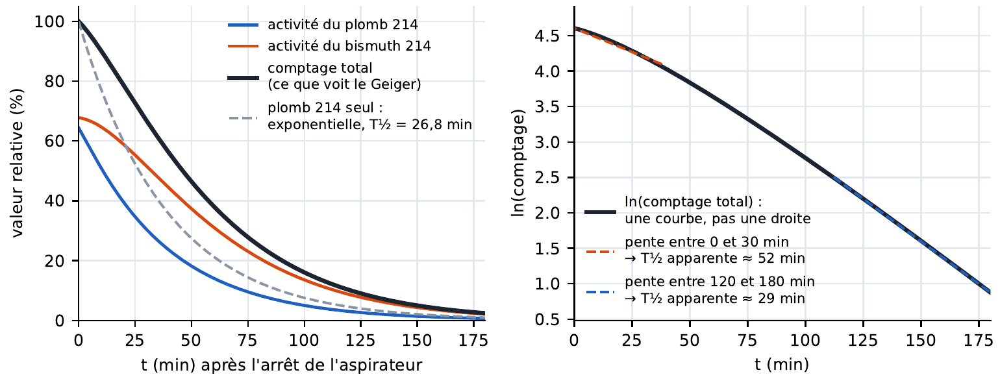
À retenir. Une demi-vie mesurée sur un mélange de noyaux « parents » et « enfants » est une demi-vie apparente : elle dépend de l’instant où on la mesure. Le « ± 0,8 min » de l’ajustement ne mesure que le hasard des comptages, pas l’erreur due à un modèle trop simple.
Radon et santé. Après le tabac, le radon est la deuxième cause de cancer du poumon en France (niveau de référence : 300 Bq/m³ dans les bâtiments). Aérer quelques minutes chaque jour suffit à réduire fortement sa concentration. Le filtre de l’expérience ne présente aucun danger : son activité est très faible et disparaît en quelques heures.
En classe
Les élèves analysent des séries de trente mesures de 10 s, relevées dans le logiciel Microcosmos (onglet Radioactivité, tableau à recopier) ou sur l’écran du Micro(K)osmos autonome.
Une évaluation expérimentale avec une autre source est proposée en deux parties de 30 minutes (pratique et théorique). Les mesures durent environ 20 minutes : une salle de 8 postes permet d’évaluer jusqu’à 24 élèves par heure. Sans groupes, la partie pratique se poursuit à la séance suivante, en parallèle d’une activité documentaire non évaluée.
Programmes et article
- APPLogiciel Microcosmos (recommandé)Onglet Radioactivité : séries, tableau, histogramme, fichiers
- INOProgramme Arduino (version de l’article)Impulsions toutes les 10 s sur le moniteur série ; adaptable à un écran LCD
- PYProgramme Python d’acquisitionPour les acquisitions longues (fermer d’abord le moniteur série)
- PYProgramme Python de traitementHistogramme et statistiques des données
L’article est proposé pour un usage limité : préférez la promotion du BUP :-) Données sur le potassium 40 : laradioactivite.com.